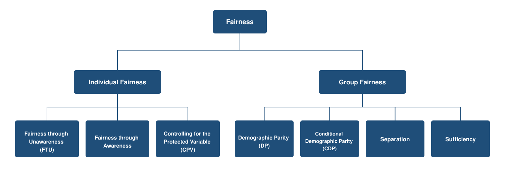
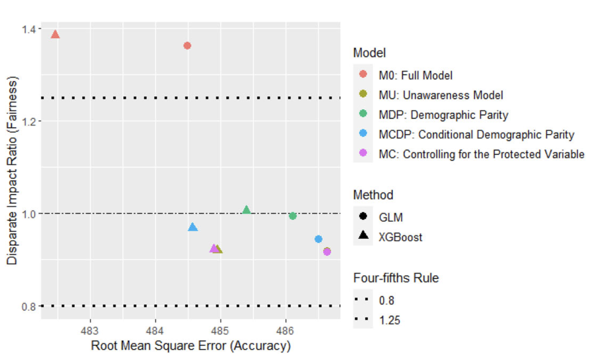

Fairness Principles
Quantitative Responsible AI: Principles, Governance, and Methods
Learning objectives
- Distinguish social, legal, and economic perspectives on discrimination and fairness in automated decision systems.
- Describe and compare quantitative fairness criteria and their underlying assumptions.
- Connect fairness criteria to model design choices and regulatory contexts.
- Explain why no single fairness criterion satisfies all stakeholder perspectives simultaneously.
Step 1: What is fair?
The motivating problem
Automated decision systems increasingly determine who gets a loan, an interview, a diagnosis, a price, or, in some jurisdictions, a risk score attached to a criminal sentence. It is tempting to treat fairness as a single, checkable property that a model either has or does not. The following case shows why that is not true.
In 2016, ProPublica’s Machine Bias investigation examined COMPAS, a recidivism-risk tool used in U.S. courts (Angwin et al. 2016). Among defendants who did not reoffend within two years, Black defendants were flagged “high risk” at nearly twice the rate of white defendants. The tool’s vendor countered that COMPAS was well-calibrated: among defendants who received the same risk score, the reoffense rate was similar across race.
Both sides had a defensible claim, and that is exactly the problem. ProPublica’s critique was a separation-style argument, equal error rates across groups, and the vendor’s defence was a sufficiency-style argument, equal calibration across groups (Chouldechova 2017). A tool can satisfy one and violate the other, and choosing which to prioritise is not a modelling detail to be resolved after the fact. It is the central question this chapter works through.
This kind of disagreement is not a coincidence of the COMPAS data specifically. Whenever two groups reoffend, default, or claim at genuinely different underlying rates, satisfying separation and sufficiency at the same time becomes mathematically impossible except in narrow special cases. The “Incompatibility of criteria” section later in this chapter makes that precise.
Has fairness been achieved?
There is no single yes-or-no answer. It depends on which of the two criteria above, separation or sufficiency, you use to test the model.
Three lenses on fairness
Different stakeholders, and different legal systems, give different answers (Frees and Huang 2023; Barocas and Selbst 2016).
| Lens | What it emphasises |
|---|---|
| Anti-discrimination | Legal obligation to avoid unfair treatment and unjustified disparate outcomes |
| Competing ethical notions | Distributive justice, solidarity, and how costs or benefits should be pooled or individualised |
| Consumer / user trust | Promises made in contracts, disclosures, and conduct standards |
These lenses do not always point in the same direction. Working through them is about making trade-offs visible before any model is built.
Feature principles
Deciding whether to use an input feature in a consequential decision is not a purely statistical question (Frees and Huang 2023).
| Principle | Key question |
|---|---|
| Control | Can the person influence the feature? |
| Mutability | Does it change over time or stay fixed? |
| Statistical discrimination | Does it predict the outcome of interest? |
| Causality | Does it cause the outcome being predicted? |
| Past discrimination | Does use reinforce historical injustice? |
| Socially valuable behaviour | Does using it discourage beneficial actions? |
Examples adapted from Frees and Huang (2023).
- Control: Ownership of a sports car is a choice the policyholder can change. Attributes like gender, race, ethnicity, or nationality are not something a person can influence at all.
- Mutability: Age changes predictably over time, unlike a fixed attribute such as place of birth.
- Statistical discrimination: Vehicle engine size predicts motor insurance claims frequency. That gives it the necessary predictive value, but predictive value alone does not settle whether the feature should be used.
- Causality: A cancer diagnosis is known to cause elevated mortality risk, so it is generally acceptable to use in life insurance underwriting.
- Past discrimination: Discriminating on skin colour is more problematic than discriminating on eye colour, since skin colour maps onto a protected, historically discriminated-against characteristic and eye colour does not.
- Socially valuable behaviour: Basing insurance decisions on genetic test results can discourage people from participating in genetic testing research, itself a socially valuable activity.
Predictive power is necessary but not sufficient. A high-performing predictor can still be problematic if it fails on causality, history, or socially valuable behaviour. A credit score used in hiring and genetic testing used in insurance underwriting are both examples. Regulators have acted on exactly this reasoning: 11 US states, most recently New York from April 2026, now restrict or ban employers from using credit checks in hiring decisions, on the grounds that credit history has no demonstrated causal link to job performance and reflects historical economic inequality (Martinez 2026).
Direct and indirect discrimination
Direct discrimination (disparate treatment) means a person is treated less favourably because a protected characteristic differs. It is excluded if the protected attribute is not used in the model.
Indirect discrimination (disparate impact) means a person is disproportionately affected because protected status is inferred through a neutral-seeming practice.
Two channels in modern automated decisions (Xin and Huang 2024; Barocas and Selbst 2016):
- Identifiable proxies are facially neutral variables that stand in for a protected attribute (e.g. postcode correlated with race and résumé gaps correlated with caregiving status)
- Unidentifiable proxies are opaque models that reproduce protected-group disparities without a single obvious surrogate
Proxy discrimination names the specific mechanism behind the identifiable-proxies channel above: a facially neutral variable that is both correlated with a protected group and predictive of the outcome precisely because of that correlation, rather than for an independent, legitimate reason (Prince and Schwarcz 2020). Indirect discrimination is the broader legal concept and is not limited to this one mechanism. It also covers the unidentifiable-proxies channel, where no single variable carries the effect, and cases where a system reproduces past discriminatory decisions because its training labels themselves encode that history, as in the healthcare example below.
Fairness through unawareness (removing the protected attribute) does not guarantee fair outputs if proxies or complex algorithms remain. Obermeyer et al. (2019) document a widely-cited healthcare example. A hospital algorithm used healthcare cost as a proxy for need to allocate care-management resources. Because Black patients historically had less access to care, they generated lower costs for the same level of underlying need, so the model systematically under-referred them, without ever using race as an input.
Fairness criteria: a taxonomy

Let X_P = protected attribute, X_{NP} = other features, Y = actual outcome, \hat{Y} = predicted outcome or decision. The symbol \perp means statistically independent of (knowing one tells you nothing about the other), and \mid means given, or within groups defined by.
Individual fairness
| Criterion | Formal condition | Intuition |
|---|---|---|
| Fairness through unawareness (FTU) | \hat{Y} = f(X_{NP}), X_P not an input | Remove the protected attribute |
| Fairness through awareness | D(\hat{Y}(x), \hat{Y}(y)) \le d(x, y) | Similar individuals should receive similar outcomes, measured with an explicit similarity metric d rather than by removing X_P (Dwork et al. 2012) |
| Controlling for the protected variable (CPV) | \hat{Y}_{CPV}(x) = E_{X_P}[f(x_{NP}, X_P)] | Average the full model over X_P at scoring |
In the fairness-through-awareness condition, x and y are two individuals (specific feature vectors), not the population-level random variables X_P and X_{NP} used elsewhere in this table. \hat{Y}(x) and \hat{Y}(y) are their predicted-outcome distributions, d(x, y) is a task-specific measure of how similar the two individuals are, and D measures how far apart their predictions are. The condition says two individuals who are similar under d cannot receive predictions further apart than that similarity allows.
Fairness through unawareness and fairness through awareness are general concepts from the algorithmic-fairness literature, applicable to any domain. CPV addresses a different problem: proxy discrimination, where the protected attribute itself is excluded from the model but other variables still carry its effect. Averaging the model’s prediction over X_P removes that residual effect directly, rather than relying on X_P simply being absent as an input. It was developed for statistical profiling generally by Pope and Sydnor (2011) and adapted for insurance pricing as “discrimination-free pricing” by Lindholm et al. (2022).
Group fairness
| Criterion | Formal condition | Intuition |
|---|---|---|
| Demographic parity (DP) | \hat{Y} \perp X_P | Same predicted-outcome distribution for all groups |
| Conditional demographic parity (CDP) | \hat{Y} \perp X_P \mid X_{L} | Equal predictions within legitimate segments (segments defined by factors accepted as fair grounds for differentiation, covered later in this chapter) |
| Separation | \hat{Y} \perp X_P \mid Y | Equal prediction errors (TPR, FPR) across groups |
| Sufficiency | Y \perp X_P \mid \hat{Y} | Equal calibration, same \hat{Y} means same expected Y for all groups |
Separation asks whether, conditional on the true outcome Y, prediction errors are the same across groups.
\Pr(\hat{Y} > t \mid Y = y,\, X_P = 0) = \Pr(\hat{Y} > t \mid Y = y,\, X_P = 1) \quad \forall\, y, t
Sufficiency asks whether, conditional on the model prediction \hat{Y}, the true outcome is the same across groups.
\Pr(Y = y \mid \hat{Y} = s,\, X_P = 0) = \Pr(Y = y \mid \hat{Y} = s,\, X_P = 1) \quad \forall\, y, s
Separation is built from error rates conditioned on Y; sufficiency is built from predictive values conditioned on \hat{Y}. The table below names each combination:
| Event | Condition | Resulting notion (\Pr\{\text{event} \mid \text{condition}\}) |
|---|---|---|
| \hat{Y}=1 | Y=1 | True positive rate, recall (TPR) |
| \hat{Y}=0 | Y=1 | False negative rate (FNR) |
| \hat{Y}=1 | Y=0 | False positive rate (FPR) |
| \hat{Y}=0 | Y=0 | True negative rate (TNR) |
| Y=1 | \hat{Y}=1 | Positive predictive value, precision (PPV) |
| Y=0 | \hat{Y}=0 | Negative predictive value (NPV) |
Both are desirable, but separation and sufficiency generally cannot both be satisfied when groups have different base rates (the actual proportion of positive outcomes in each group), except in special cases such as perfect prediction.
This is the same mechanism behind the familiar precision-recall trade-off for a single classifier: precision (PPV) and recall (TPR) move in opposite directions as the decision threshold changes, because PPV is a function of TPR, FPR, and the base rate (the Bayes’-rule relationship derived below). Separation vs sufficiency is this same trade-off applied across groups rather than across thresholds. Matching TPR and FPR (recall-style performance) across two groups with different base rates still leaves PPV (precision) unequal, for exactly the reason a single classifier’s precision shifts as its recall does.
Regulatory frameworks
Fairness regulation generally works through four mechanisms, each mapping to a different criterion or design choice from this chapter, and each recurring across jurisdictions in different institutional forms.
- Prohibited variable rules ban a protected attribute outright, e.g. bans on using race in credit scoring in the US. This maps to FTU, since the attribute is simply never an input.
- Proxy discrimination rules target the case where the protected attribute itself is not used but other variables carry its effect anyway, not a blanket prohibition. Colorado’s SB21-169 requires insurers to test algorithms and predictive models for unfair discrimination arising from this kind of proxy effect, and New York’s DFS Circular Letter No. 7 imposes similar expectations for AI systems and external data used in underwriting and pricing (Colorado General Assembly 2021; New York State Department of Financial Services 2024). China’s Algorithm Recommendation Provisions address a related proxy effect from the opposite direction, banning the use of a consumer’s own data to charge them a worse price than another consumer receives for the same product (Cyberspace Administration of China 2022). A more directly insurance-specific rule reinforces the same point: Article 27 of the Measures for the Administration of Consumer Rights Protection by Banking and Insurance Institutions requires reasonable pricing and prohibits unfair pricing, for the same products and services, among consumers with equivalent transaction conditions or risk profiles (China Banking and Insurance Regulatory Commission 2022). This maps to CPV.
- Disparate-impact or parity rules test the model’s outcomes directly, e.g. the four-fifths rule (a hiring-rate benchmark under U.S. employment law) and insurance community rating (charging everyone in a group the same price regardless of individual risk). Colorado’s SB21-169 testing regime is also the clearest regulatory example of this in practice, since insurers must show that predictive models do not produce unfairly discriminatory outcomes once legitimate rating factors are accounted for (Colorado General Assembly 2021). This maps to the group criteria (DP, CDP). The EU’s unisex insurance-pricing rule is a stricter, individual-level version of this same logic. A man and a woman with the same rating profile, meaning identical values on all permitted rating factors such as vehicle type or age, must receive the same price, not just the same price on average. FTU satisfies it directly, since price becomes a function of the permitted rating factors alone and sex plays no role. CPV also satisfies it, since a customer’s own sex is never used at scoring, only averaged over, so two customers who share the same non-protected characteristics receive the same price.
- Algorithmic impact and transparency obligations require deploying organisations to document, test, and explain a model’s fairness properties, regardless of which design or criterion they chose. This is a process obligation, not a substantive one. No single model design satisfies it on its own, since it sits alongside whichever design is chosen rather than inside it. New York’s DFS Circular Letter No. 7 requires insurers to maintain governance frameworks and explain model outputs to regulators (New York State Department of Financial Services 2024), and NYC Local Law 144 requires an independent annual bias audit for automated hiring tools (New York City Council 2021). California’s private passenger auto insurance regulation (Title 10 CCR §2632.5) takes a narrower, more mechanical approach to the same goal. It requires three mandatory rating variables to carry more weight in pricing than any optional variable, a rule that can only be verified using the kind of feature-importance methods covered in Chapter 4 (Xin et al. 2025). Singapore’s MAS FEAT principles name Transparency as one of four required dimensions, operationalised through the Veritas Initiative’s assessment methodology (Monetary Authority of Singapore 2018, 2019), and China’s NFRA guidance for banking and insurance names avoiding algorithmic discrimination as a required governance element alongside its own transparency requirements (National Financial Regulatory Administration 2026a). Australia’s AHRC insurance guidance, developed jointly with the Actuaries Institute, sets comparable documentation and accountability expectations for underwriting and pricing (Australian Human Rights Commission and Actuaries Institute 2022).
Chapter 1 covers the full comparative regulatory landscape across jurisdictions.
Incompatibility of criteria
Achieving individual and group fairness simultaneously is often impossible (Krafcheck et al. 2026; Xin and Huang 2024; Mehrabi et al. 2021). This is a special case of a more general result: except in narrow special cases, no classifier can simultaneously satisfy calibration and balanced error rates across groups when the groups have different base rates (Kleinberg et al. 2017). This is precisely the tension in the COMPAS case from the start of this chapter. ProPublica’s critique was a separation-style argument, and the vendor’s defence was a sufficiency-style one. Both were internally valid, and neither could be satisfied at once given the different reoffense base rates across race.
Write p_g = \Pr(Y=1 \mid X_P=g) for the base rate in group g, and consider a binary decision \hat{Y} \in \{0,1\} with false positive rate \text{FPR}_g = \Pr(\hat{Y}=1 \mid Y=0, X_P=g) and false negative rate \text{FNR}_g = \Pr(\hat{Y}=0 \mid Y=1, X_P=g). By Bayes’ rule, the positive predictive value, the probability that someone flagged high-risk actually reoffends, which is what sufficiency requires to be equal across groups, is
\text{PPV}_g = \frac{p_g(1 - \text{FNR}_g)}{p_g(1-\text{FNR}_g) + (1-p_g)\,\text{FPR}_g}
If separation holds, so \text{FPR}_0 = \text{FPR}_1 and \text{FNR}_0 = \text{FNR}_1 across both groups, then \text{PPV}_g is a function of p_g alone, with \text{FPR} and \text{FNR} held fixed. For an imperfect classifier, \text{PPV}_g changes as p_g changes, so \text{PPV}_0 = \text{PPV}_1 (sufficiency) is only possible when p_0 = p_1. In the Broward County data underlying the COMPAS case, the two-year reoffense rate was 51% for Black defendants and 39% for White defendants (Chouldechova 2017), so p_0 \neq p_1, and separation and sufficiency cannot both hold, except at the two degenerate extremes of a perfect classifier (\text{FPR}=\text{FNR}=0) or one that ignores the data entirely.
Worked example. Take two groups of 100 people each, with round, illustrative base rates in the same spirit as the real COMPAS gap. Both groups get the same false negative rate of 10% and false positive rate of 20%, so separation holds exactly by construction.
Group A confusion matrix
| Predicted high-risk (\hat{Y}=1) | Predicted low-risk (\hat{Y}=0) | |
|---|---|---|
| Actual reoffend (Y=1) | TP = 27 | FN = 3 |
| Actual no reoffend (Y=0) | FP = 14 | TN = 56 |
Group B confusion matrix
| Predicted high-risk (\hat{Y}=1) | Predicted low-risk (\hat{Y}=0) | |
|---|---|---|
| Actual reoffend (Y=1) | TP = 54 | FN = 6 |
| Actual no reoffend (Y=0) | FP = 8 | TN = 32 |
From these four confusion-matrix cells, each group’s flag rate, TPR/FPR, and PPV are computed as:
\text{Flag rate}_g = \frac{TP + FP}{TP + FP + FN + TN} \qquad \text{TPR}_g = \frac{TP}{TP + FN} \qquad \text{FPR}_g = \frac{FP}{FP + TN} \qquad \text{PPV}_g = \frac{TP}{TP + FP}
The table below applies these formulas to the two confusion matrices above.
| Group A (p_0 = 30\%) | Group B (p_1 = 60\%) | |
|---|---|---|
| Reoffend (Y=1) | 30 | 60 |
| Do not reoffend (Y=0) | 70 | 40 |
| Correctly flagged high-risk | 30 \times 90\% = 27 | 60 \times 90\% = 54 |
| Wrongly flagged high-risk | 70 \times 20\% = 14 | 40 \times 20\% = 8 |
| Total flagged high-risk | 41 | 62 |
| Flag rate_g (demographic parity check) | 41\% | 62\% |
| \text{TPR}_g,\ \text{FPR}_g (separation check) | 90\%,\ 20\% | 90\%,\ 20\% |
| \text{PPV}_g (sufficiency check) | 27/41 \approx 66\% | 54/62 \approx 87\% |
The flag rate itself is far from equal across the two groups (41% vs 62%, a demographic parity violation), even though \text{TPR}_g and \text{FPR}_g are identical across both groups by construction (that is separation). \text{PPV}_g also comes out unequal (that is a sufficiency violation).
Even with identical false positive and false negative rates in both groups, the share of “high risk” flags that turn out correct jumps from 66% to 87%, purely because Group B’s base rate is higher. Equalising the flag rate across groups (demographic parity) or equalising PPV across groups (sufficiency) would each require giving the two groups different false positive and false negative rates, which is exactly what violates separation.
Intuitively: if a tool is equally reliable when it says “high risk” in both groups, but reoffending is genuinely more common in one group, it must flag relatively more people in that group as high risk, including more people who will not go on to reoffend. That shows up as a higher false positive rate for that group. It is a mathematical consequence of the base-rate gap, not evidence that the tool’s predictions are unreliable.
The trade-off between criteria is itself part of the fairness discussion, not a modelling bug to be fixed.
For a deeper technical treatment of fairness criteria, model designs, and their quantitative implementation (illustrated throughout with an insurance pricing case study), see:
Step 1 (Define Fairness) and Step 2 (Design Fair Pricing) correspond directly to this chapter and extend it with worked examples and interactive tools for exploring the fairness–accuracy trade-off. Step 3 (Assess Impact) and Step 4 (Audit the System), summarised later in this chapter, are covered there in more technical depth as optional further reading.
Two logics of resource allocation
Whether fairness means individualised pricing or pooled cost-sharing depends on how a good or service is conceived (Frees and Huang 2023).
| Position | Emphasis | Allocation logic |
|---|---|---|
| Social good | Solidarity, access, universal service | Subsidising solidarity |
| Economic commodity | Efficiency, adverse selection, moral hazard | Chance solidarity |
Adverse selection means higher-risk people are more likely to buy insurance, since they know their own risk better than the insurer does. Moral hazard means having insurance can change behaviour, making the insured risk itself larger. Subsidising solidarity pools costs across everyone regardless of individual risk. Chance solidarity pools the shared uncertainty of who will have a claim, while pricing still tracks individual risk.
Actuarial fairness means each policyholder (the person who holds the insurance policy) should pay for their own risk and only their own risk (Frees and Huang 2023).
The EU ban on gender-based motor insurance pricing (2012) illustrates the conflict. The European Court of Justice held that equal treatment of men and women took precedence over gender being a statistically valid predictor of motor claims (European Court of Justice 2011). The ban did not eliminate the underlying risk difference between male and female drivers — it redistributed who pays for it.
Compulsory motor and health insurance are often treated as social goods, with premiums pooled across groups. Voluntary life insurance behaves more like a competitively priced product, where finer risk classification (sorting customers into more detailed risk categories for pricing) is usually accepted. The same tension shows up well beyond insurance. Should healthcare access be priced by individual risk or pooled as a social good? Should a subscription service charge by individual usage cost, or a flat rate?
Consumer / user trust
The third lens asks whether the system honours what the organisation has promised its users.
- Many consequential relationships rely on an information asymmetry. The user discloses information in good faith, while the organisation holds far more data and modelling capability. Insurance contracts formalise this as utmost good faith (a duty for both sides to disclose relevant facts honestly) (Frees and Huang 2023).
- An outcome can be compliant yet feel unfair if it diverges from disclosed promises, changes without clear explanation, or uses information in unexpected ways.
- Not every difference in treatment is driven by the outcome being predicted (Frees and Huang 2023). A decision can differentiate between people for reasons unrelated to their actual risk or merit, for example based on how likely someone is to shop around, negotiate, or switch providers. This kind of outcome-irrelevant differentiation is a recurring source of user concern, and is more contested when the underlying behavioural factor (price sensitivity, negotiating power, loyalty) correlates with a protected attribute (Xin and Huang 2024).
Compliance with anti-discrimination rules is necessary but not sufficient for this lens.
Step 2: Designing fair models
How is fairness enforced in a model?
Three stages in the modelling pipeline (Xin and Huang 2024; Mehrabi et al. 2021):
| Stage | What happens | Models |
|---|---|---|
| Pre-processing | Adjust inputs before training | MDP, MCDP |
| In-processing | Build fairness into the training objective | Constrained optimisation |
| Post-processing | Adjust outputs after training | MC |
The right stage depends on which criterion was chosen in Step 1, not on what is easiest to implement.
The five model designs
| Model | Criterion | Approach |
|---|---|---|
| M0 (full model) | Baseline | Uses X_P and X_{NP} |
| MU (unawareness) | FTU | \hat{Y} = f(X_{NP}) only, protected attribute removed |
| MDP | Demographic parity | Pre-process all X_{NP} to remove correlation with X_P |
| MCDP | Conditional demographic parity | Retain legitimate predictors; debias only non-legitimate ones |
| MC | CPV | Fit M0, then average predictions over X_P at scoring |
These designs were formalised and validated on insurance pricing data (Xin and Huang 2024; Lindholm et al. 2022), but each corresponds to a general pattern used across fair-ML applications: unawareness, unconditional debiasing, conditional debiasing, and post-hoc averaging.
Step 1’s criteria were introduced through a classification example (COMPAS’s binary high-risk flag), but insurance pricing is usually a regression problem: Y is continuous (claim frequency, severity, or pure premium), not a 0/1 decision. Xin and Huang (2024) formalise the five designs below in exactly this regression setting. Demographic parity extends directly, requiring equal average predicted value across groups rather than equal flag rates, which is how the disparate impact ratio in the case study below is computed. Separation and sufficiency’s classification form (equal TPR/FPR, equal PPV) has no confusion matrix to draw on once \hat{Y} is continuous, so applying them here means extending the same underlying idea to a continuous outcome rather than using those formulas directly. The five designs themselves are agnostic to this choice: whichever criterion is picked, and however it is extended to a continuous outcome, the same toolkit applies.
Using the same notation as Xin and Huang (2024): X_{NP} is split into legitimate X_{NP_{legit}} and non-legitimate X_{NP_{not}} predictors for MCDP, Y is the response (claim frequency, severity, or pure premium), and \hat{Y} is the predicted value.
\hat{Y}_{M0} = f_{M0}(X_{NP}, X_P) \hat{Y}_{MU} = f_{MU}(X_{NP}) \hat{Y}_{MDP} = f_{MDP}(X_{NP}^*) \hat{Y}_{MCDP} = f_{MCDP}(X_{NP_{not}}^*,\, X_{NP_{legit}}) \hat{Y}_{MC} = \frac{1}{N}\sum_{j=1}^N \hat{f}_{M0}(X_{NP},\, X_P = x_{P_j})
X_{NP}^* is the debiased version of X_{NP} with its dependence on X_P removed (X_{NP_{not}}^* applies the same debiasing only to the non-legitimate subset), which is what \tilde{X}_{NP} and \tilde{X}_{NL} denote elsewhere in this section. One way to construct it is the orthogonal-predictors method: regress X_{NP} on X_P and take the residual, X_{NP}^* = X_{NP} - \hat{X}_{NP}, first proposed for insurance pricing by Frees and Huang (2023). M0, MDP, and MCDP all require X_P at both training and prediction time; MC needs it only during training, since x_{P_j} at prediction time ranges over the population’s protected-attribute values rather than the individual’s own.
Barocas et al. (2023) (Chapter 3) distinguish three general techniques for satisfying a non-discrimination criterion algorithmically: pre-processing, in-processing, and post-processing. A given criterion, such as demographic parity, is not tied to one of these. MDP, MCDP, and MC are simply this course’s named model designs built on one technique each, and the same underlying criterion could in principle be reached by a different route. Which technique is practical depends on what access you have to the data and training pipeline, not on which is more “correct.”
Pre-processing adjusts the non-protected predictors before training, so the resulting model cannot reconstruct X_P’s effect no matter how it is subsequently trained. This guarantee follows from the data-processing inequality, and it is how MDP and MCDP are formalised in this course. The simplest implementation is orthogonalisation (residualisation), which subtracts the conditional mean: \tilde{X}_j = X_j - E[X_j \mid X_P] for each X_j \in X_{NP}, then train on \tilde{X}_{NP} instead of X_{NP}. This ensures \hat{Y} \perp X_P (demographic parity) by construction, but only removes the mean dependence on X_P. A nonlinear or higher-order dependence can survive it. Optimal transport (Lindholm et al. 2024b) goes further, remapping each predictor’s entire distribution rather than just its mean, at the cost of being more computationally involved. Kamiran and Calders (2012) (Kamiran and Calders 2012) develop related pre-processing techniques for classification more broadly. MCDP applies whichever technique is chosen only to non-legitimate predictors X_{NL}, retaining legitimate predictors X_L unchanged. With orthogonalisation, that means \tilde{X}_{NL} = X_{NL} - E[X_{NL} \mid X_P, X_L], training on (X_L,\, \tilde{X}_{NL}). This allows outcome variation through legitimate factors while removing disparity introduced by non-legitimate proxies.
In-processing builds the fairness constraint into the training objective directly (constrained optimisation), rather than transforming the inputs first. Because the classifier is optimised with the constraint in mind, this route can achieve the highest accuracy for a given level of fairness, but it needs access to the raw data and training pipeline, and typically ties the implementation to a specific model class. One advantage is that it does not require X_P to be available at prediction time. Lindholm et al. (2024a) implement this with a multi-task neural network that embeds the fairness criterion into training directly.
Post-processing adjusts a trained model’s outputs rather than its inputs or training objective. This is MC’s approach: fit M0 in full, then at scoring time average out the protected attribute, \hat{Y}_{MC}(x) = \frac{1}{N}\sum_{j=1}^N \hat{f}_{M0}(x_{NP},\, X_P = x_{P_j}), which removes direct X_P effects from individual predictions while preserving accuracy on non-protected features. Post-processing’s main advantage is that it works on any trained black-box model with no retraining, which makes it the only option when you don’t control the training pipeline. Barocas et al. (2023) note it can even be provably optimal, if the score being post-processed is already Bayes-optimal. The trade-off is that it explicitly uses group membership at the point of decision, which some regulatory regimes treat as disparate treatment even when the intent is corrective.
Legitimate vs non-legitimate variables
Legitimate factors are those a regulator, employer, or institution accepts as grounds for differentiated treatment.
- Insurance: claims history, vehicle type, annual mileage, and driving experience are typically legitimate. Certain credit data or fine-grained geographic indicators are not, in some markets.
- Lending: income and repayment history are typically legitimate. Postcode alone typically is not.
- Hiring: role-relevant skills and experience are legitimate. Proxies for protected characteristics are not.
MCDP is designed for this distinction. Differences between groups are allowed only through legitimate variables. Non-legitimate predictors are orthogonalised with respect to X_P before training.
How regulation maps to model design
The regulatory spectrum runs from no restriction to full pooling.
- No restriction → M0 (baseline)
- Prohibition on X_P only → MU
- Prohibition on proxies too → MU*
- Equal average outcomes (DP) → MDP
- Full pooling / community rating → pooled outcome
MU* denotes an extended version of MU that also removes rating variables explicitly identified as proxies for X_P (for example, a named list of banned variables under a specific regulation), rather than X_P alone. Plain MU leaves those variables untouched. MU* still leaves unnamed or statistically inferred proxies untouched, which is what MCDP and MDP are designed to catch.
Not every regulatory requirement maps cleanly onto a single statistical criterion. This is common under principles-based regimes: China’s 2026 NFRA guidance for banking and insurance institutions requires firms to avoid algorithmic discrimination, without prescribing one specific fairness criterion (National Financial Regulatory Administration 2026a, 2026b; Sina Finance 2026). Australia’s Human Rights Commission, jointly with the Actuaries Institute, applies general human-rights principles to insurance underwriting and pricing without mandating a specific statistical test (Australian Human Rights Commission and Actuaries Institute 2022). Singapore’s MAS FEAT principles ask institutions to define, measure, justify, and monitor fairness in their own AI-driven pricing or underwriting systems, operationalised through the Veritas Initiative’s assessment methodology (Monetary Authority of Singapore 2018, 2019), again without prescribing a single criterion. In each case, an institution has to choose which criterion (or combination) satisfies the regulator’s principle, using the judgement Step 1 develops.
The fairness–accuracy trade-off
A common concern is that fairness constraints will make models substantially less accurate.
Case-study evidence from Xin and Huang (2024) on French motor insurance:
- MCDP and MC achieved loss ratios (the share of premium income paid out in claims) close to unconstrained M0
- Reduction in predictive accuracy was modest
- Reduction in outcome disparities was substantial
- XGBoost retained most of its predictive edge while meeting fairness criteria

M0, which uses the protected attribute directly, is the most accurate model on the plot but sits furthest outside the four-fifths band. MDP and MCDP pull the disparate impact ratio back toward 1 with only a small increase in RMSE. MCDP and MC push the ratio slightly below 1, and even then the accuracy cost relative to M0 is small. Note also that MU (fairness through unawareness) happens to land inside the four-fifths band on this particular dataset. That is a feature of this dataset’s specific proxy structure, not a general guarantee. It is exactly why FTU is treated as necessary but not sufficient earlier in this chapter.
This pattern (modest accuracy loss for a substantial fairness gain) recurs in other domains. Rodolfa et al. (2021) find it across education, mental health, criminal justice, and housing safety, and Hardt et al. (2016) find a similar pattern in credit scoring. Mehrabi et al. (2021) surveys the broader evidence. The cost of fairness is smaller than often assumed, but it is not zero, and strict demographic parity accepts greater exposure to the outcome-level equivalent of adverse selection. This is a business decision, but it can be quantified.
Steps 3 & 4 (optional overview)
This course focuses on Steps 1–2, defining a fairness criterion and designing a model that enforces it. Two further steps exist in the full framework. They are summarised briefly below for awareness (not examined in depth in this course), with the full technical treatment available at fair.feihuang.org if your work requires it.
Step 3: assessing downstream impact (brief)
A model that meets its fairness criterion can still produce an unfair outcome once its predictions enter a real business process. If a downstream step (re-ranking, a discretionary override, or a separate margin or eligibility adjustment) is applied after a fair model and correlates with a protected group, the fairness achieved at the model stage can be undone. This can happen in hiring, pricing, or lending, wherever a fair model’s output is adjusted afterward by a separate, unconstrained layer. See fair.feihuang.org — Step 3 for the welfare-analysis methods (illustrated there on an insurance pricing example) that quantify this.
Step 4: auditing the system (brief)
An audit asks whether we can demonstrate compliance. A test asks whether we can find a problem. A credible audit pre-commits its test, tolerance, and control variables before looking at the data, and uses equivalence testing (TOST, or two one-sided tests) rather than a conventional significance test. TOST checks whether a difference is small enough to fall within an acceptable range, rather than just testing whether it differs from zero, since failing to detect a violation is not the same as demonstrating compliance. The burden of proof lies with the organisation being audited, not the regulator (Huang and Hooker 2026).
A separate, older tradition tests blindness directly, rather than following a pre-committed statistical protocol. It sends matched pairs through the real decision-making system that differ only in the attribute of interest (for example, an otherwise-identical résumé with a Black-sounding versus a White-sounding name), and compares the outcomes (Barocas et al. 2023, ch. 7). This is the design behind classic studies such as Bertrand and Mullainathan’s résumé audit of hiring discrimination, and it is also the design behind this chapter’s own LLM case study below. Huang et al. (2026) hold everything but the claimant’s stated gender fixed and compare the model’s output across that one change.
See fair.feihuang.org — Step 4 for the full audit protocol, including HC3-corrected inference for deterministic algorithms and the handling of proxied protected attributes.
Fairness considerations for large language models
Everything above assumes a model with a fixed input schema: a defined set of features, a defined protected attribute, a single predicted outcome. Large language models (LLMs) break that assumption. There is no column called “Gender,” and the “prediction” is open-ended text. The same underlying concerns (does the system treat groups differently in ways that matter?) still apply, but both where the bias comes from and how it is measured change.
Where the bias comes from. An LLM’s behaviour is shaped by its training corpus, which reproduces the stereotypes and imbalances present in whatever text it was trained on (Bender et al. 2021), and then further shaped by alignment fine-tuning (e.g. reinforcement learning from human feedback), which encodes the preferences of whoever labelled the training data (Ouyang et al. 2022). There is no single “protected attribute” to remove. Bias can surface in word choice, tone, whose perspective is assumed as default, or which occupations/roles are associated with which demographic groups, without any explicit input field driving it.
Why measurement is harder. The group-fairness criteria from Step 1 (demographic parity, separation, sufficiency) all compare a well-defined \hat{Y} across groups. An open-ended generation task doesn’t have a single \hat{Y} to compare. Evaluating whether an LLM’s output is “fair” typically requires templated probes (e.g. swapping a name or pronoun and comparing sentiment or toxicity of the generated text across the swap) rather than a direct application of the criteria above. Gallegos et al. (2024) surveys this landscape and finds dozens of proposed metrics, with little consensus on which is right for a given use case. The field is considerably less mature than the tabular-classification setting this course focuses on.
Huang et al. (2026) audit six LLMs (including GPT-5, GPT-4o, and Gemini and Claude models) on 1,388 vehicle insurance claims, using a counterfactual design (changing one input, like stated gender, while holding everything else fixed, to isolate its effect) that varies the claimant’s stated gender across four categories (Male, Female, Non-binary, and Not Specified) rather than the Male/Female binary a conventional audit would use. Under the full-information condition, none of the six models shows a statistically significant Male/Female disparity. But three models show significant disparities once Non-binary or Not Specified claimants are included, or once the claimant’s name is removed from the prompt. One model’s claim-amount bias even reverses direction depending on whether a name is present. The result is that an audit restricted to a binary gender comparison and a single prompt configuration can certify a model as unbiased while missing disparities that only surface once the full range of categories and conditions is tested. This is a direct illustration of the measurement problem above.
Tanlamai et al. (2026) compare housing prices generated by GPT (prompted to act as a real estate agent) against the human-set listing prices for 284,749 U.S. properties, then test whether either set of prices reflects the well-documented pattern of houses in white-dominant neighbourhoods being priced higher than comparable houses in minority-dominant neighbourhoods. GenAI-generated prices are not discrimination-free, but the racial price gap is 8.7% smaller than in the human-generated prices, and the reduction is robust across four different LLMs (GPT-4, GPT-3.5, Gemini 1.5, and Claude 3.5). This runs counter to the common assumption that generative AI trained on historical data will simply reproduce or amplify existing discrimination. Read alongside the insurance-claims audit above, the two studies make the same point from opposite directions. Whether an LLM narrows or widens a disparity depends on the task and how carefully it is tested, not on a general property of “AI bias” that holds across every use case.
Practical implication. If an LLM is used as a component in a consequential decision (for example, summarising a claim file for an adjuster, or drafting a first-pass response to a policyholder), the same Step 1 question applies. What would an unfair outcome look like here, and for which groups? The answer has to be worked out case by case, since the standard tabular metrics don’t transfer directly.
Summary: the four-step framework
| Step | Question | Output | Depth in this course |
|---|---|---|---|
| 1. Define fairness | Which criterion applies to this system and context? | Agreed fairness standard | Full |
| 2. Design a fair model | Which model design enforces that criterion? | M0, MU, MDP, MCDP, or MC | Full |
| 3. Assess impact | Who gains and loses once outputs reach the real system? | Impact analysis by protected group | Brief overview |
| 4. Audit the system | Can we demonstrate compliance with pre-committed tests? | Audit protocol and result | Brief overview |
Recommended reading
Main resources
- fair.feihuang.org — Step 1: Define Fairness — feature principles, the fairness criteria taxonomy, and the anti-discrimination / ethical / consumer-trust lenses developed in this chapter
- fair.feihuang.org — Step 2: Design Fair Pricing — the five model designs, pre-/in-/post-processing stages, and the fairness–accuracy trade-off
- Frees and Huang (2023) — pricing feature principles and actuarial fairness
- Xin and Huang (2024) — fairness criteria, model designs, and the trade-off on insurance data
- Barocas and Selbst (2016) — foundational legal and technical treatment of disparate impact
- Barocas et al. (2023) — Fairness and Machine Learning: Limitations and Opportunities, freely available online. Chapter 2 (“Classification”) covers the fairness criteria taxonomy in this chapter in full technical depth
- Hardt et al. (2016); Mehrabi et al. (2021) — general machine-learning fairness criteria and survey
- Dwork et al. (2012) — the original “fairness through awareness” paper, and the source of the term “individual fairness”
- Kleinberg et al. (2017) — the seminal proof that calibration and balanced error rates generally can’t both hold when base rates differ
- Pope and Sydnor (2011) — the general statistical-profiling version of CPV, predating its insurance-specific formalisation
- Angwin et al. (2016); Obermeyer et al. (2019) — non-insurance case studies of proxy discrimination, in criminal justice and healthcare
- Gallegos et al. (2024); Bender et al. (2021) — bias and fairness specifically in large language models
- Huang et al. (2026) — counterfactual audit of gender bias across six LLMs on real insurance claims, including non-binary and unspecified-gender categories
- Tanlamai et al. (2026) — GenAI-generated housing prices show less racial price discrimination than human-generated prices, robust across four LLMs
Optional further reading (Steps 3–4)
- fair.feihuang.org — Step 3: Assess Impact — welfare and downstream-outcome analysis
- fair.feihuang.org — Step 4: Audit the System — the pre-committed audit protocol and equivalence testing
- Krafcheck et al. (2026) — broader taxonomy of fairness metrics for life insurance
- Huang and Hooker (2026) — pre-committed audit protocol and corrected inference